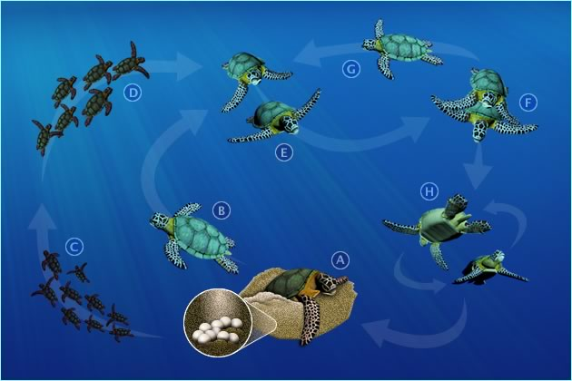

The Life Cycle of Sea Turtles
The life of a sea turtle starts when a female lays its eggs on a nesting beach, usually in the tropics. From six weeks to two months later (depending on the species), a tiny hatchling makes its way to the surface of the sand and heads to the water, dodging every predator imaginable.
What Is The Sea Turtle Life Cycle?
Baby turtles (or hatchlings) start out as eggs that are laid in nests on beaches around the world. Once ready to hatch, they break out of the egg with an egg tooth (called a “caruncle”) and move slowly up the sand until they get to the surface and then head to the water.
As young (or juvenile) turtles, they head out to sea. From there, in many cases, we don’t know where they go (that’s why we call them “the lost years.”) Some turtles born on the US East Coast head out to an area called the sargassum sea, a large area with seaweed known as sargassum, where they feed and grow.
Once they are fully grown, they head back to where they were born to mate. Adult females will mate with multiple males and then when ready, the climb up onto the nesting beach to lay their eggs, starting the cycle again.

Why Are Sea Turtles Important?
Healthy oceans need sea turtles. Sea turtles are a "keystone species", which means they are an important part of their environment and influence other species around them. If a keystone species is removed from a habitat, the natural order can be disrupted, which impacts other wildlife and fauna in different ways.
Five Reasons Sea Turtles Are Really Really Important
- Turtles help control their prey. For example, leatherbacks help manage the amount jellyfish in the ocean, and hawksbills help reefs by eating sponges that compete with them for space.
- Turtle nesting helps beaches. The nutrients left behind by eggs and hatchlings that don’t survive provide an important source for coastal vegetation.
- Hatchlings are an important source of food for many animals. Birds, fish, and mammals like raccoons rely on plentiful hatchlings to survive during nesting season.
- They are important for coastal economies and native communities. Many places rely on turtle watching or diving for jobs and income and a number of indigenous communities revere sea turtles as part of their cultures. Plus there are emotional and psychological benefits to seeing a sea turtle in the wild.
- Green turtles grazing on seagrass is an important way to keep seagrass beds healthy. Healthy seagrass benefits many species and stores carbon.